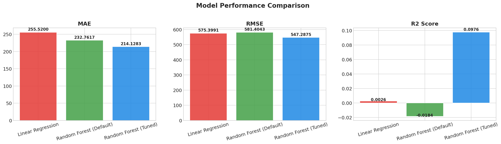
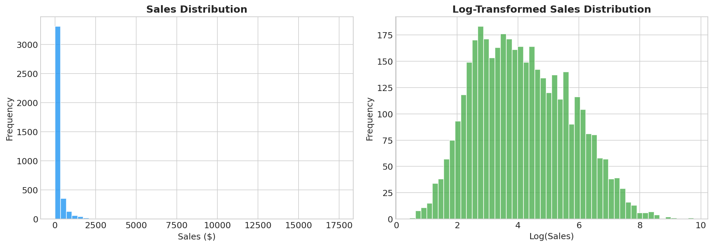
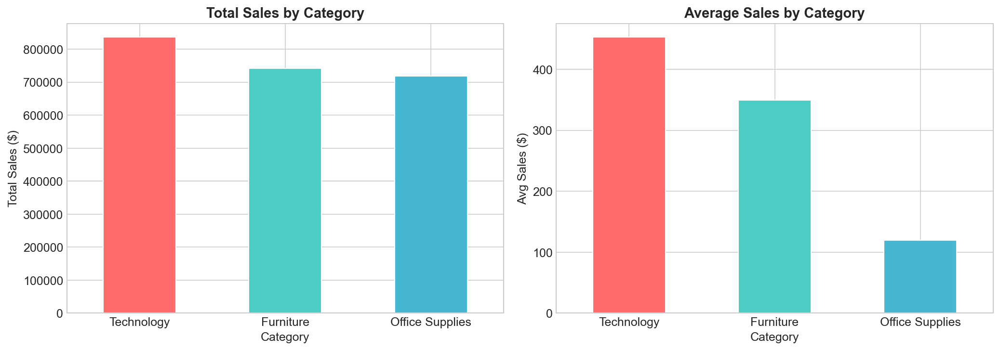
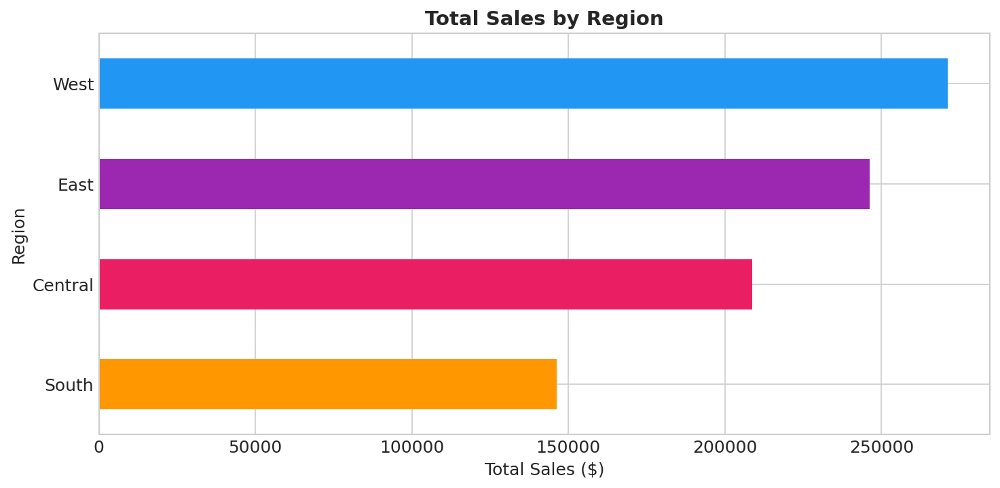
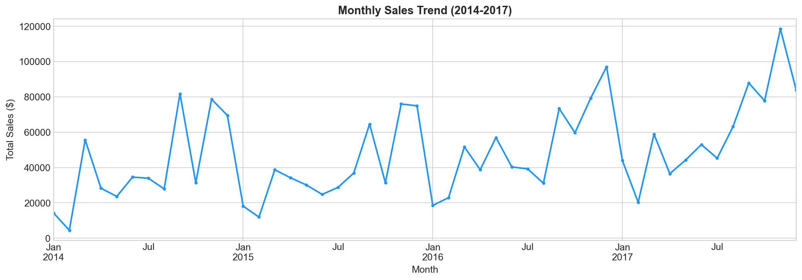
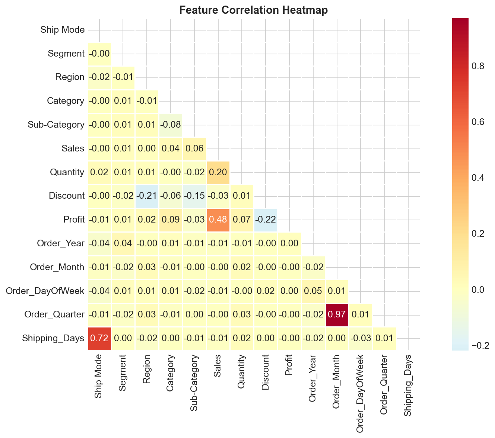
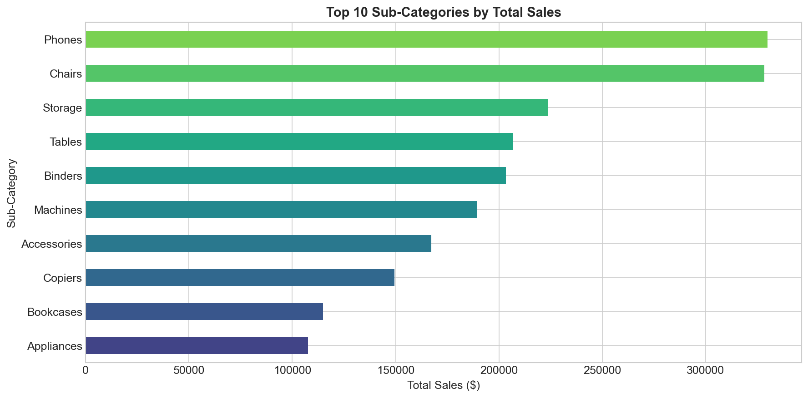
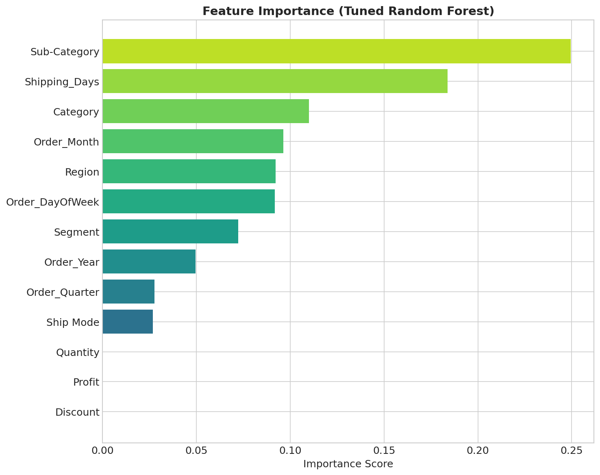
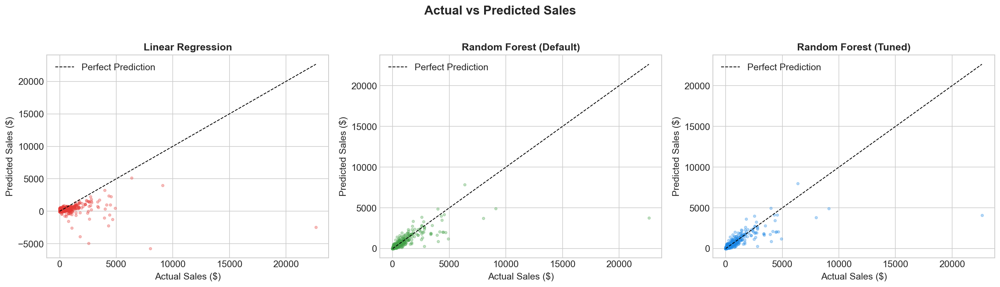
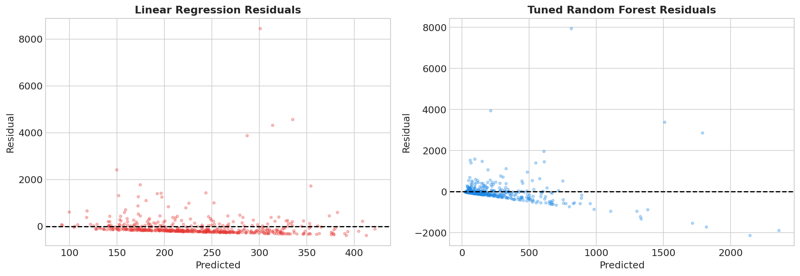

Predict transaction-level revenue from retail features.
Project Summary
What this project delivers
Simple benchmark used to test linear assumptions.
Tree ensemble used to capture non-linear interactions.
Visual analysis, residuals, feature importance, and comparison charts.
Model Results
MAE, RMSE, and R² at a glance
Upload a dataset to refresh the results.
Lower is better.
Penalizes large errors.
Higher is better.

Model Comparison
Performance metrics from the executed notebook
| Model | MAE | RMSE | R² Score |
|---|
Relative R² view
Lower MAE and RMSE values are better. The tuned Random Forest leads on all three metrics.
Business Details
How the notebook is structured
Data loading
Read the Superstore CSV and inspect shape, types, and nulls.
Preprocessing
Convert dates, drop identifiers, and prepare clean features.
Feature engineering
Build temporal and shipping features and label encode categories.
Modeling
Compare Linear Regression and Random Forest with tuning.
Image Gallery
Key EDA and model artifacts








